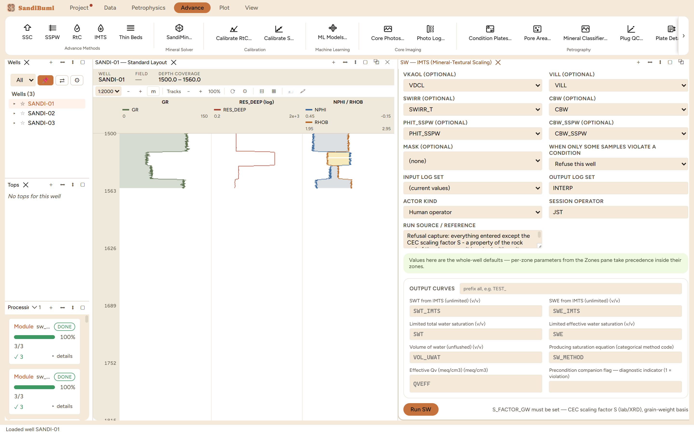
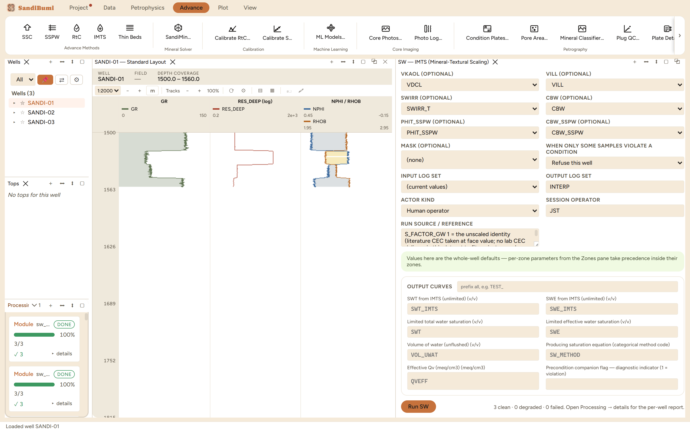

The IMTS saturation model: a Waxman-Smits-family conductivity equation whose clay charge is built from the mineral volumes themselves, scaled to laboratory CEC, and referenced to the water that is actually free to conduct. It is the second of the two low-resistivity methods in this book (RtC is the other), for shaly sands that keep computing wet on clean-sand equations while producing hydrocarbon. Its distinctive move: the clay charge Qv is divided by (1 − Swirr), because when hydrocarbon displaces free water the same ions concentrate in less water and conduct more per unit volume.
The theoretical clay charge is built from each clay's volume, grain density and literature CEC constant (kaolinite 8, illite 25 meq/100g of dry rock), expressed per unit dry-rock mass. The scaling factor S multiplies that whole term to reconcile it with what a laboratory actually measures on this rock. The effective charge is then Qv_eff = Qv_bulk/(1 − Swirr), and the model iterates the Waxman-Smits form
Ct = SwT^n* / F* · (Cw + B·Qv_eff / SwT), F* = a / PHIT^m*
with the counterion mobility B from the published temperature and Rw form, until SwT is stable. SWE comes from the clay-bound water split. Two contracts matter: missing clay evidence is not zero clay (a sample where both clay curves are missing is refused rather than answered as clean rock, while a measured zero legitimately reduces to Archie), and S never defaults, because it is a property of the rock and of the specific clay curves it was fitted against.
Everything filled except the scaling factor, the run refuses:
S_FACTOR_GW must be set — CEC scaling factor S (lab/XRD), grain-weight basis
The fix lives in Advance ▸ Calibrate S…, which fits S from lab CEC measurements against the clay content of the very curves the run will use. On this dataset that pane says the honest thing: no point data exists to fit against, so nothing can be picked. Its warning is worth reading twice: S is a ratio against whatever the clay curves say, so calibrating it against one estimate of clay and running it against another makes S wrong by exactly the difference between them, invisibly, because both are plausible clay volumes.

3 clean, 1164 samples answered, none withheld (the kaolinite curve answers everywhere SSC did). Read it by rock, not by the section median: in the wet sand the model reads 0.9035, grading itself against rock known to be water-bearing; in the gas sand it reads 0.1385, the pay signal; the whole-section median of 0.1397 mostly reflects the shaly half.
SELECT round(median(c.value), 4) FROM computed_curves c JOIN standard_curves sc ON c.well_id = sc.well_id AND c.depth = sc.depth WHERE c.curve_name = 'SWT_IMTS' AND sc.gr < 60 AND sc.res_deep < 10 AND NOT isnan(c.value)
Then read QVEFF, the model's own QC output. Its shale median here is 12.40 meq/cm3, an order of magnitude beyond a plausible clay charge, because Qv_eff divides by (1 − Swirr) and the SWIRR input (SSC's SWIRR_T) saturates at exactly 1 on 591 of 1164 samples of this shaly section. The division is the method's physics doing its job in rock the method is not for: in shale there is no free water for the charge to concentrate into, and QVEFF says so before the saturation misleads anyone.
The S dial, measured: S dropped from 1 to 0.5 halves QVEFF exactly (7.7804 to 3.8902, the linearity on display) and lifts the whole-section median SwT from 0.1397 to 0.2407. Ten saturation units from a factor with no outward sign: the run is 3 clean either way, the curves are equally smooth, and only the calibration trail says which is right. That is why S ships absent. Restored to 1, every number returns exactly.
